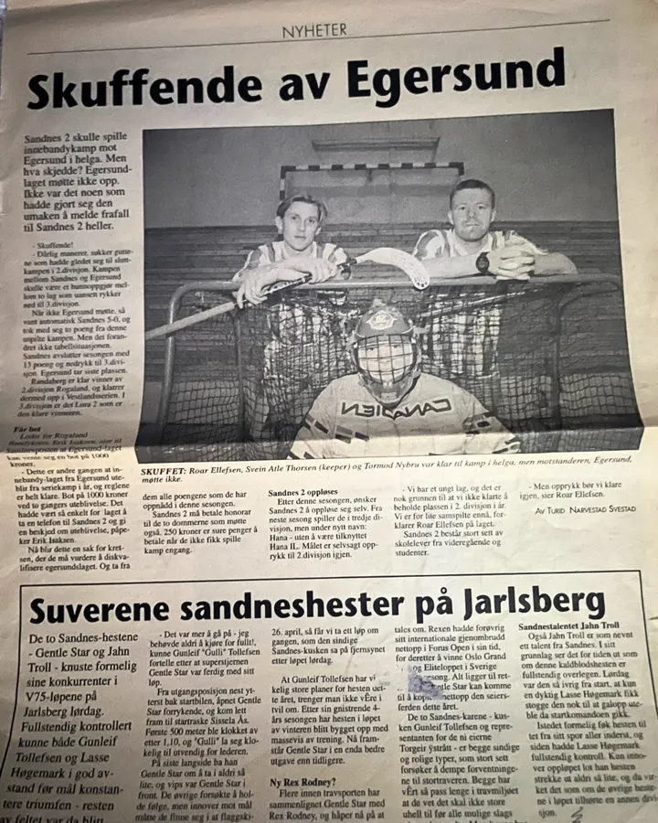
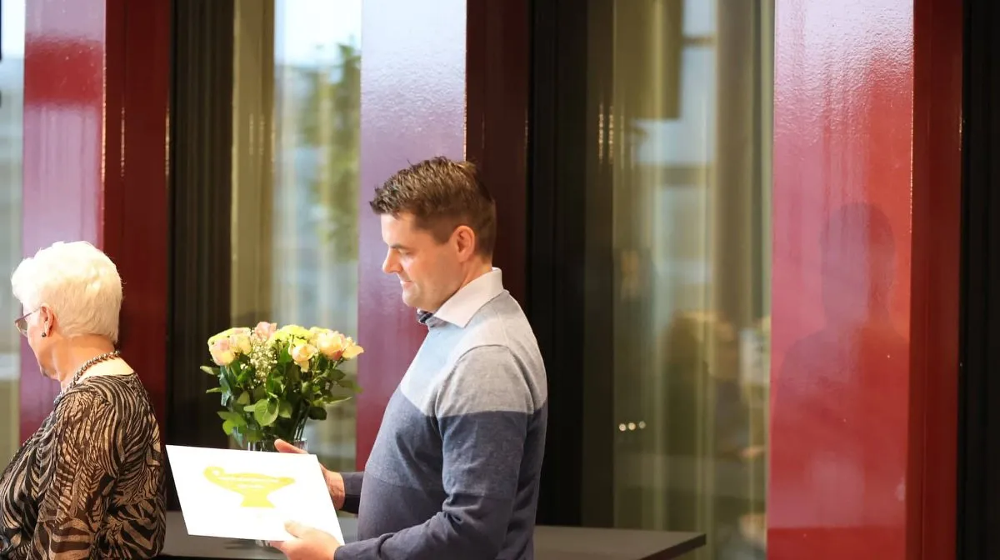
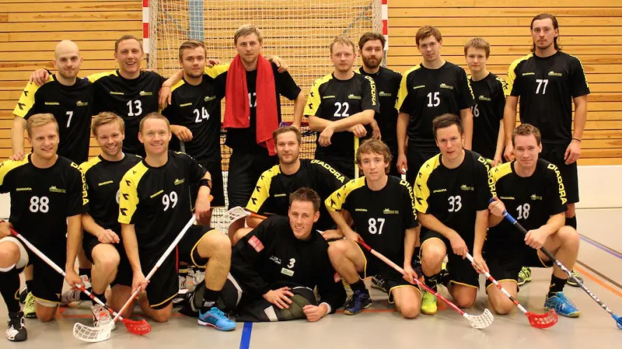
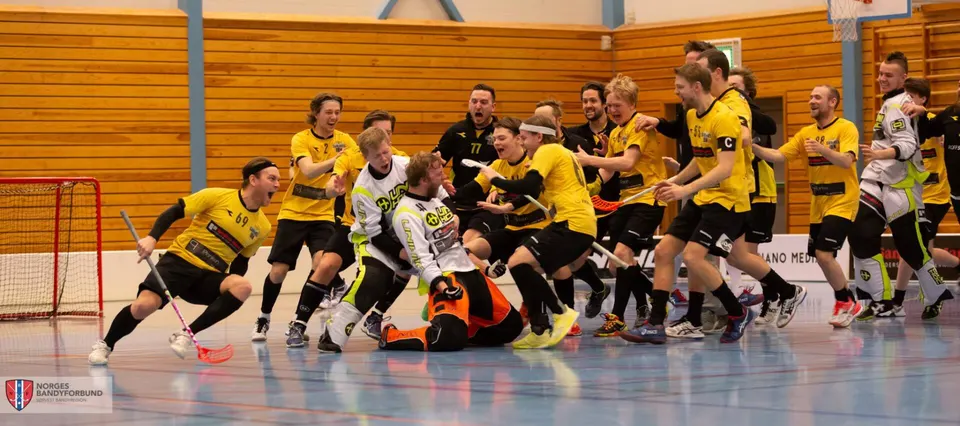

Om klubben og sporten
Sandnes IBK spiller i sorte drakter med gult i, samt sorte strømper.
Sandnes IBK strekker seg helt tilbake til 1988, da klubben først startet opp under navnet Trones Innebandy.
De første årene bar preg av en idrett som tross alt var ganske ung i Norge. Innebandyseksjonen i Norges Bandyforbund ble etablert i 1988. Kampene ble spilt i små gymsaler 3 mot 3 utespillere pluss keeper, men uten vant. Enkelte gymsaler var så små at det kun var plass til 2+2 spillere. Sesongen 1992 ble det store endringer da kamper skulle spilles på stor bane som i dag, og klubben måtte denne sesongen snekre sitt eget vant av finerplater! I dag er det litt andre rammer. Innebandyseksjonen er den desidert største i bandyforbundet, med om lag ¾ av medlemmene, og innebandy er fortsatt en av de raskest voksende idrettene i Norge.
Sesongen 1989/90 var klubben for første gang med i ordinært seriespill. I 1991 slo Trones Innebandy seg sammen med Hana Hockeyboys. Sandnes Innebandyklubb ble stiftet 9. april 1991. I 1996 ble Aspervika Innebandyklubb en del av Sandnes IBK. Vi er i dag en klubb i sterk vekst med mange aldersbestemte lag og seniorlag. Det gleder oss spesielt at vi har klart å etablere et elitelag for herrer.
Sesongen 2013/2014 vant Sandnes IBK 1. divisjon for herrer, og da kom spørsmålet om elitesatsing. Vi valgte av flere grunner å takke nei, men bestemte oss for å prøve igjen sesongen etter, slik at vi fikk ett år ekstra til å planlegge. Det kreves mye for å etablere seg i den norske eliteserien i innebandy: økonomi, organisasjon og støttespillere er kanskje det viktigste. Fra sesongen 2014/2015 har herrelaget vårt spilt i eliteserien.
Fellesnevneren for samtlige lag fra Rogaland som har vært i eliteserien, er at man taper store penger. Det gir mindre midler til aldersbestemte lag, og går da ut over medlemmene i klubbene. Her ønsker Sandnes IBK å skille seg ut. Vi skal ikke bare bygge opp et A-lag i eliteserien, vi skal fortsette det gode arbeidet med å bygge en klubb. Rekruttering og aldersbestemte lag skal alltid være vårt hovedfokus.
Barn og ungdom i Sandnes IBK
Siden slutten av 90-tallet var det et mål å ha et aldersbestemt lag for å rekruttere nye spillere til A-laget, men det var først på midten av 2000-tallet at rekrutteringen og satsingen på barn og unge tok til for alvor. I 2006 hadde klubben i tillegg til A-laget et Gutter 15-lag og et U8-lag (1. og 2. klasse). Årene etter har vi etablert flere nye lag i ulike bydeler i Sandnes. I sesongen 14/15 var vi totalt 12 aldersbestemte lag som deltok i seriespill og på miniturneringer. Med fast årlig rekruttering fra 1. klasse i flere bydeler de siste årene vokser klubben med rundt 50–100 medlemmer årlig.
Sandnes IBK 35 år – fra gymsal til elitesatsing
9. april markerer Sandnes IBK 35 år. En historie som startet i det små, og som i dag har vokst til å bli en av de største innebandyklubbene i Norge. Dette er historien om menneskene, valgene og fellesskapet som har formet klubben.
Starten – bygget på engasjement
Historien starter på slutten av 80-tallet. En kompisgjeng, en gymsal på Soma skole, og en nøkkel som egentlig ikke skulle vært brukt.
«Vi lånte en nøkkel og kom oss ubemerket inn i gymsalen og fikk oss en treningsøkt.»
Det forteller Geir Maldal, en av dem som var med fra starten og senere ble en av de viktigste personene i klubbens utvikling. Det som begynte som Trones Innebandy, vokste raskt. Flere miljøer i Sandnes fant veien til sporten, og i 1991 ble Sandnes IBK etablert.
De første årene var preget av en idrett i utvikling. Det ble spilt i små gymsaler, ofte 3 mot 3, noen ganger enda færre. Banene hadde ikke vant, og målgårder måtte teipes før kamp. Da innebandyen etter hvert gikk over til spill på full bane, måtte klubben selv finne løsninger.
«Vi snekret vårt eget vant av finerplater i en garasje. Det kostet oss 16.000 kroner og ble gjort på dugnad.»
Rammene var enkle. Men engasjementet var stort.

En klubb som holdt på å forsvinne – og ble bygget opp igjen
Veien videre var ikke rett frem. På midten av 90-tallet opplevde klubben frafall av spillere, og på et tidspunkt var Sandnes IBK nær ved å forsvinne. Men klubben ble reddet.
«Vi fikk bygget den opp igjen fra slutten av 90-tallet,» forteller Geir.
Det ble starten på en ny fase. Med rekruttering, ungdomslag og et stadig sterkere klubbmiljø.
Fellesskapet som fundament
Gjennom alle år har én ting vært konstant: fellesskapet.
«Innebandy var en idrett alle kunne være med på. Det var nok en av hovedgrunnene til at vi startet – og at det vokste.»
Dette verdigrunnlaget har fulgt klubben videre. En lavterskelidrett. Et tilbud for alle. Et miljø der man blir sett. Geir har vært en bærebjelke i dette arbeidet gjennom mer enn 30 år, og ble tildelt frivillighetsprisen for sin innsats for innebandyen i Sandnes og regionen.

Veien videre – en ny generasjon tar ansvar
Blant dem som vokste opp i dette miljøet var Trond Vervik. Som 13-åring startet han i klubben, og opplevde raskt hva som gjorde Sandnes IBK spesielt.
«Man følte seg som en del av hele klubben uansett hvilket lag man spilte på.»
Han tok med seg denne erfaringen videre i karrieren, spilte på høyere nivå og opplevde blant annet å vinne NM. Men etter hvert kom et veivalg. Som 23-åring valgte han å flytte hjem igjen.
«Uten Sandnes hadde jeg ikke vært der jeg er i dag – nå var det min tur å gi noe tilbake.»
Starten på elitesatsingen
Da Trond kom tilbake i 2011, var ikke klubben der den er i dag. Resultatene var varierende, og rammene begrensede. Men ambisjonene begynte å vokse.
«Det hadde vært kult med et elitelag i Sandnes.»
Likevel var det tydelig at dette måtte gjøres riktig. Ikke på bekostning av klubben, men som en del av den.
«Uten rekruttering er vi ingenting.»
Klubben valgte derfor en retning der elite og bredde skulle utvikles parallelt.
«Elite og bredde hører sammen.»
Det ble opprettet egne strukturer rundt elitesatsingen, samtidig som klubben fortsatte å bygge tilbudet til barn og ungdom.

Utfordringer – og tydelige valg
Arbeidet var krevende. Nivået i regionen var ikke alltid godt nok, og spillere måtte hentes utenfra for å kunne konkurrere. Samtidig var det utfordringer knyttet til samarbeid og spillerflyt mellom klubber. Men for Trond var én ting avgjørende: muligheter må gis.
«Jeg byttet selv klubb som 15-åring. Hadde jeg ikke gjort det, hadde jeg aldri fått oppleve det jeg har i dag.»
Han trekker frem hvordan han selv ble møtt da han dro videre:
«Sandnes ønsket meg lykke til. Det var aldri noen som prøvde å stikke kjepper i hjulene.»
Det er en holdning han mener flere kan lære av.
En klubb for alle
Gjennom hele utviklingen har ett prinsipp vært styrende: klubben skal være for alle.
«Skal du ha et tilbud til alle, så må du faktisk ha det. Fra barn på 5–6 år – til de som vil spille på høyeste nivå.»
Det handler ikke bare om å si det, men å gjøre det.
«Har du ikke et godt nok tilbud selv, må du tørre å si det – og ønske spillere lykke til videre.»
For i bunn ligger en erkjennelse:
«Vi har ikke råd til å miste noen.»

I dag – og veien videre
I dag er Sandnes IBK en klubb med sterk vekst, stort engasjement og et tilbud som favner bredt. Fra de yngste spillerne til eliteserien. Men kanskje er det viktigste ikke hvor klubben er, men hvordan den har kommet dit. Gjennom mennesker som har tatt ansvar. Gjennom valg som har vært gjort over tid. Gjennom et fellesskap som fortsatt står sterkt.
Når Trond ser tilbake på reisen, oppsummerer han det slik:
«Magisk.»